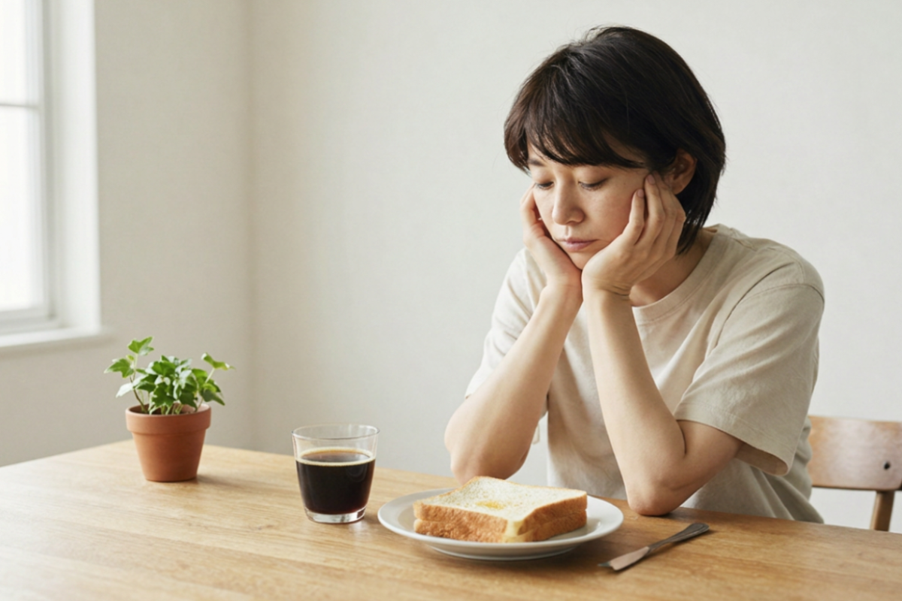

分子栄養学 ×
細胞から整えるファスティング
食欲は
我慢するものではなく、
整えるもの。
血糖値やホルモンバランスから整えて、
頑張り続けなくても、自然と軽やかな体へ。
食欲コンサルタント・Loyell 主宰
秋本るみ（るーみん）
- エステティシャン歴 約10年
- 分子栄養学認定カウンセラー
- 2020年 食欲コンサルタントとして活動開始
- 延べ100名以上の伴走サポート実績
「ただ痩せる」のではなく、 “食欲に振り回されない心と体”を整えるサポートをしています。
私自身も、
食に悩み続けていました。
はじめまして。
食欲コンサルタントの、るーみんです。
分子栄養学をベースに、ファスティングや食欲コントロールのサポートをしています。
私が大切にしているのは、 「ただ痩せること」ではなく、
食欲に振り回されない心と体を整えて、自分で自分をケア（自走）できる状態をつくることです。
実は私自身、20代の頃に過度なダイエットをきっかけに、 過食と拒食を繰り返していた時期がありました。
食べては後悔して、我慢すると反動で食べてしまう。
「どうして普通に食べられないんだろう」
「どうしてこんなに意志が弱いんだろう」
そんなふうに、ずっと自分を責めていました。
さらに、肌荒れや体調不良も続き、 心も体も余裕がなくなっていた時に出会ったのが分子栄養学でした。
そこで初めて、食欲の乱れは意志の問題ではなく、血糖値や栄養不足、ホルモンバランスなど、“体からのサイン”だったことを知りました。
必要な栄養を満たし、体を整えていくうちに、あれほど苦しかった食への執着が、少しずつ落ち着いていきました。
現在は、これまでの経験や学びをもとに、100名以上の方のサポートを行っています。
かつての私のように、 食べることに悩み、自分を責めてしまう女性が、 少しでも安心して、自分の体と向き合えるように。
そんな想いで、Loyellを運営しています。
こんなお悩みはありませんか？
-
お腹は空いていないのに、
夜になると何か食べたくなる -
甘いものや炭水化物が
やめられない -
PMSの時期になると、
食欲がコントロールできなくなる -
我慢しては反動で食べてしまう、
を繰り返している -
朝起きるのがつらく、
いつも体が重だるい -
肌荒れや不調が続いていて、
自信が持てない
Reason
なぜ、食べたくなってしまうのか。
その原因は、心だけではなく体の状態にある場合があります。
-

隠れ低栄養
カロリーは摂っていても栄養が不足している
-
血糖値の乱高下
急激な上昇と低下が血糖値の乱高下による
エネルギー不足 -
ホルモンバランスの乱れ
食欲コントロールの低下
食欲が乱れるのは、
"栄養不足"のサインかもしれません。
「ファスティング＝ただ我慢するもの」
そんなイメージを持っていませんか？
Loyellでは、無理に食事を減らすのではなく、
血糖値やホルモンバランス、栄養状態を整えながら、
"なぜ食べたくなってしまうのか"という根本原因にアプローチします。
必要なものを満たしていくことで、
食欲は少しずつ穏やかになっていきます。
-

01 ｜ 分子栄養学に基づく分析
分子栄養学とは「足りない栄養を満たすことで、食欲を自然に落ち着かせる」というアプローチ。
まずは、今のあなたの体の状態を知ることから。
食習慣や生活リズム、必要に応じて血液データなども参考にしながら、 「なぜ食欲が乱れやすくなっているのか」を丁寧に読み解いていきます。
一人ひとり違う原因に合わせて、無理のない方法をご提案します。 -

02 ｜ 整えるファスティング
Loyellのファスティングは、"ただ食べないだけ"の断食ではありません。
準備食・回復食まで含めて、体に負担をかけにくい形で進めていくため、
「思っていたよりつらくなかった」
「意外と普段通り過ごせた」
というお声も多くいただいています。
無理な食事制限ではなく、必要な栄養を補いながら整えていくことで、 自然と食欲が安定しやすい状態を目指します。 -

03 ｜ 自走できる知識と習慣を
大切にしているのは、一時的に痩せることではなく、 "自分で整えられるようになること"。
プログラムが終わった後も、血糖値を乱しにくい食べ方や、 食欲との付き合い方を日常の中で実践できるよう、 分子栄養学をベースにわかりやすくお伝えします。
「また繰り返してしまう」を卒業し、 無理なく続けられる習慣づくりをサポートします。
ファスティングの流れ

Day 1-2
準備食
食事を少しずつ整える

Day 3-5
ファスティング
酵素ドリンクで栄養補給

Day 6-7
回復食
腸に優しく食を戻す
よくあるご質問
ファスティングについて、よくいただくご質問にお答えします。
-
A. 必要な栄養を補いながら進めるため、
「思っていたより空腹感が少なかった」と感じる方が多いです。 -
A. お仕事や家事を続けながら取り組まれている方がほとんどです。
「体が軽く感じた」「集中しやすかった」というお声もいただいています。 -
A. ファスティングは、回復食まで含めて整えることが大切です。
血糖値を乱しにくい食べ方や、食欲を安定させるコツまでサポートしています。 -
A. 準備不足のまま始めてしまうと、頭痛やだるさが出ることがあります。
Loyellでは事前の食事調整や栄養状態を大切にしながら進めていきます。
実績
-
95%
満足度
「安心して続けられた」というお声を多数いただいています
-
100名以上
サポート実績
食欲や不調のお悩みに寄り添ってきました
-
6年
学びと経験
自身の経験をもとにファスティング指導・食欲コンサルタントとして活動を始めて6年目です。
日々のサポートや、リアルなお声を発信しています。
お客様の声
20代〜40代の女性を中心にご参加いただいています。
※オンラインサポートがメインのため、全国どこからでもご参加いただけます
※ 個人の感想です。効果には個人差があります。
Loyellが大切にしていること

01
｜
我慢ではなく、
"体の仕組み"から整える
食欲を根性で抑えるのではなく、
分子栄養学をベースに、体の状態から丁寧に整えていきます。

02 ｜ 実体験があるからこそ、寄り添える
摂食障害や肌荒れに悩み、自分を責めてきた経験があるからこそ、
不安や苦しさを否定せず、一緒に向き合い、寄り添いながら進めます。

03
｜
一時的ではなく、
"これから先"につながる
目指すのは、短期間で痩せることではなく、
自分で自分の体を整えられ、自走できる状態になること。
食に振り回されない感覚を、少しずつ育てていきます。
あなたに合った形で、
無理なくスタートを。
まずはLINEにて、現在のお悩みやお体の状態をお聞かせください。
お一人おひとりに合わせてご提案しています。
パーソナルプラン
¥29,800
- 個別セッション月2回
- LINEサポート無制限
- 血液検査データ分析
グループプラン
¥9,800
- グループセッション月2回
- 専用チャットコミュニティ
- 一斉ファスティング企画
- 教材・レシピ配信
- 初回カウンセリング無料